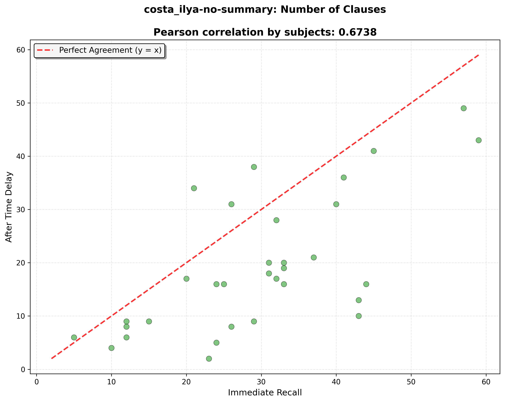
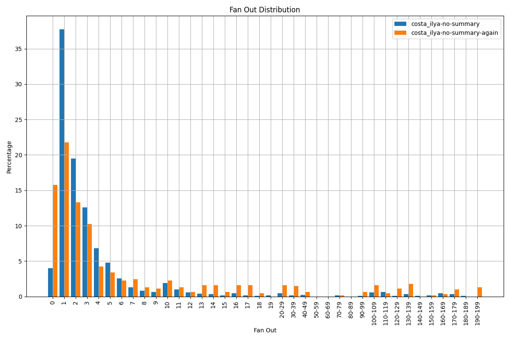
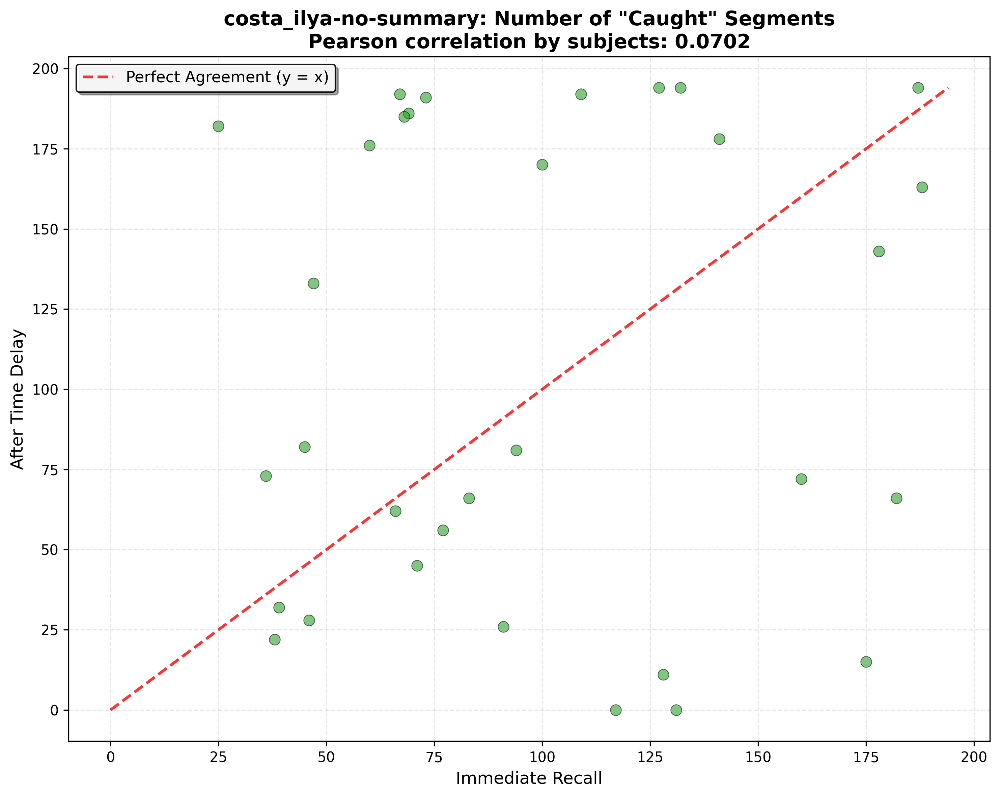
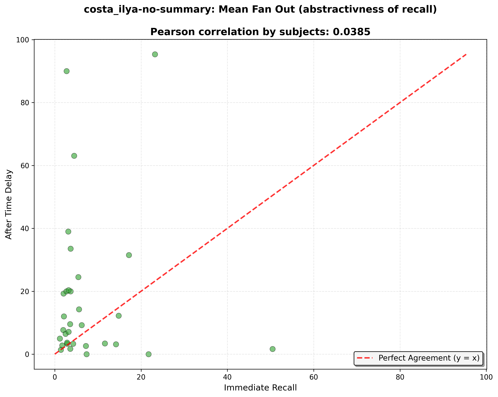
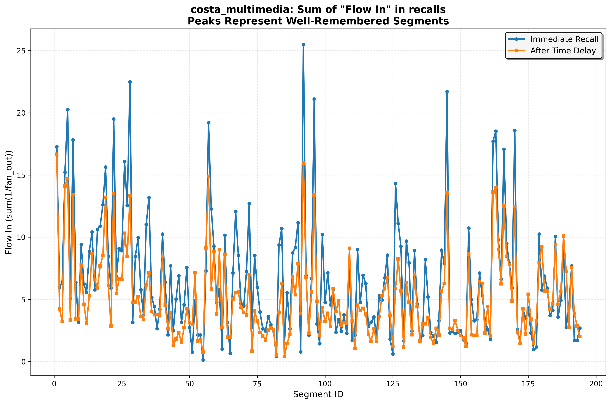

Experiment 1: Text-Based Story Recall
Methodology: Subjects read a text-only story and wrote their recall immediately after reading. After one month, they wrote their recall again from memory.
Sample Size: 32 users returned for the delayed recall after one month.
Key Question: How does recall change over a long delay (1 month) when subjects only have textual input?
Experiment 2: Multimedia Story Recall
Methodology: Subjects listened to an illustrated story (audio + visual) and wrote their recall immediately after listening. After one week, they wrote their recall again from memory.
Sample Size: 39 users returned for the delayed recall after one week.
Key Question: How does recall change over a shorter delay (1 week) when subjects have both auditory and visual input?
P-Caught vs Flow-In
These plots examine how the p-caught and flow-in (sum of 1/fan_out for all clauses that mention the segment) change over time for each segment in the story.
See code at: compare_again/p-caught_vs_1_divided_by_sum_fan_out.pyExperiment 1 (Text-Only, 1-month delay)
Detailed Analysis: View detailed recall analysis

Plotly Version
Experiment 2 (Multimedia, 1-week delay)
Detailed Analysis: View detailed recall analysis

Plotly Version
Recall Length Analysis (Character Count)
These plots examine how the total length of recalls in characters changes between immediate and delayed conditions. This provides insight into the overall verbosity and detail level of recall at the character level.
Experiment 1 (Text-Only, 1-month delay)
Detailed Analysis: View detailed recall analysis
What this shows: Each point represents one subject's recall. The x-axis shows immediate recall length in characters, y-axis shows delayed recall length in characters. Points near the diagonal indicate consistent recall length across the 1-month delay. Points below the diagonal show memory decay (shorter delayed recalls).
Experiment 2 (Multimedia, 1-week delay)
Detailed Analysis: View detailed recall analysis
What this shows: Similar to Experiment 1, but with a shorter delay (1 week) and multimedia input. This allows us to compare how different input modalities and delay periods affect recall length consistency at the character level.
Recall Length Analysis (C-Scatter Plot)
These plots examine how the total number of clauses in recalls changes between immediate and delayed conditions. This provides insight into the overall verbosity and detail level of recall.
Experiment 1 (Text-Only, 1-month delay)
Detailed Analysis: View detailed recall analysis
What this shows: Each point represents one subject's recall. The x-axis shows immediate recall length (clauses), y-axis shows delayed recall length. Points near the diagonal indicate consistent recall length across the 1-month delay. Points below the diagonal show memory decay (shorter delayed recalls).
Experiment 2 (Multimedia, 1-week delay)
Detailed Analysis: View detailed recall analysis
What this shows: Similar to Experiment 1, but with a shorter delay (1 week) and multimedia input. This allows us to compare how different input modalities and delay periods affect recall length consistency.
Fan-Out Distribution
These plots examine the distribution of fan-out values for recalls.
Experiment 1 (Text-Only, 1-month delay)
Experiment 2 (Multimedia, 1-week delay)
Segment Coverage Analysis (N-Scatter Plot)
These plots examine how many unique story segments are referenced in recalls, providing insight into the breadth of memory coverage.
Experiment 1 (Text-Only, 1-month delay)
Detailed Analysis: View detailed recall analysis
What this shows: Each point represents one subject's recall. The x-axis shows the number of unique story segments referenced in immediate recall, y-axis shows delayed recall. Points near the diagonal indicate consistent segment coverage across time delays. Points below the diagonal show reduced segment coverage over time.
Experiment 2 (Multimedia, 1-week delay)
Detailed Analysis: View detailed recall analysis
What this shows: Similar analysis to Experiment 1, but with multimedia input and shorter delay. This reveals whether visual/auditory input helps maintain segment coverage over time.
Abstractiveness Analysis (Fan-Out Scatter Plot)
These plots examine how abstractive (summarizing) the recalls become over time. Fan-out measures how many story segments each recall clause maps to - higher values indicate more abstractive recall.
Experiment 1 (Text-Only, 1-month delay)
Detailed Analysis: View detailed recall analysis
What this shows: Each point represents one subject's mean fan-out. Points above the diagonal indicate that delayed recalls become more abstractive (summarizing multiple segments per clause). Points below the diagonal show the opposite pattern.
Experiment 2 (Multimedia, 1-week delay)
Detailed Analysis: View detailed recall analysis
What this shows: Similar analysis to Experiment 1, but with multimedia input and shorter delay. This reveals whether different input modalities affect the tendency toward abstractive recall over time.
Segment-Specific Memory Analysis (Flow-In Scatter Plot)
These plots examine how well individual story segments are remembered by looking at flow-in values for each segment across immediate and delayed recalls.
Experiment 1 (Text-Only, 1-month delay)
Detailed Analysis: View detailed recall analysis
What this shows: Each point represents one story segment's flow-in value. Flow-in measures how well-remembered a segment is (sum of 1/fan_out for all clauses mapping to that segment). Points near the diagonal indicate consistent segment-specific memory across time delays.
Experiment 2 (Multimedia, 1-week delay)
Detailed Analysis: View detailed recall analysis

What this shows: Similar analysis to Experiment 1, but with multimedia input and shorter delay. This reveals whether different input modalities affect which specific segments are better remembered over time.
Memory Profile Analysis (Flow-In Plot)
These plots show the memory profile across all story segments, revealing which parts of the story are most and least memorable.
Experiment 1 (Text-Only, 1-month delay)
Detailed Analysis: View detailed recall analysis

What this shows: The x-axis represents story segments in order, y-axis shows flow-in values. Each line represents immediate vs. delayed recall. Peaks indicate well-remembered segments, valleys show poorly recalled segments. The pattern reveals the story's memory landscape.
Experiment 2 (Multimedia, 1-week delay)
Detailed Analysis: View detailed recall analysis
What this shows: Similar analysis to Experiment 1, but with multimedia input and shorter delay. This reveals whether different input modalities create different memory profiles and how they change over time.
Key Findings and Comparison
Experiment Comparison Summary
Delay Period Effects: Experiment 1 (1-month delay) vs. Experiment 2 (1-week delay) allows us to examine how memory decay patterns differ across different time scales.
Input Modality Effects: Comparing text-only (Experiment 1) vs. multimedia input (Experiment 2) reveals how different sensory channels affect memory encoding and retrieval patterns.
Expected Patterns:
- Recall Length (Characters): Longer delays typically show more points below the diagonal, indicating memory decay at the character level
- Recall Length (Clauses): Longer delays typically show more points below the diagonal, indicating memory decay
- Segment Coverage (N): Multimedia input may help maintain segment coverage over time
- Abstractiveness (Fan-out): Delayed recalls often become more abstractive as details are lost but gist is preserved
- Memory Profiles (Flow-in): Different input modalities may create different memory landscapes, with multimedia potentially enhancing memory for visual/action-oriented segments
Research Questions Addressed: These experiments together help answer fundamental questions about how memory encoding modality and delay period interact to shape recall patterns, abstractiveness, and the specific content that is most memorable over time.